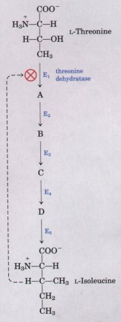
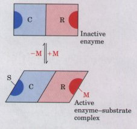
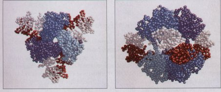
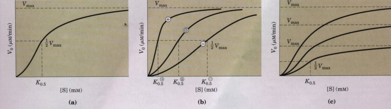
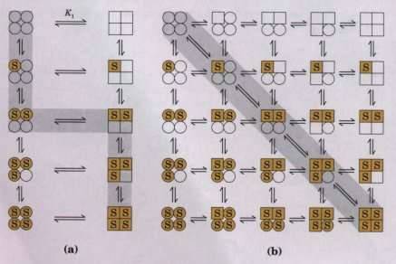
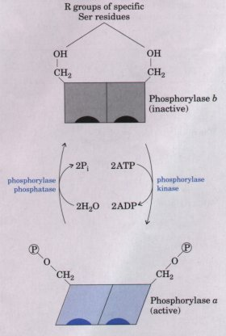
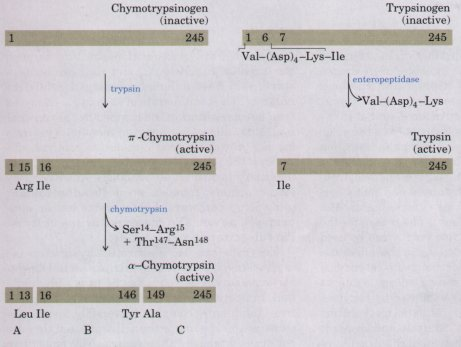

, and no modulator
, and no modulator  on an
allosteric enzyme in which K0.5 is modulated without a
change in Vmax. (c) A less common type of modulation,
in which Vmax is modulated with K0.5 nearly
constant.
on an
allosteric enzyme in which K0.5 is modulated without a
change in Vmax. (c) A less common type of modulation,
in which Vmax is modulated with K0.5 nearly
constant.| We now turn to a special class of
enzymes that represent exceptions to some of the rules
outlined so far in this chapter. In cell metabolism,
groups of enzymes work together in sequential pathways to
carry out a given metabolic process, such as the
multireaction conversion of glucose into lactate in
skeletal muscle or the multireaction synthesis of an
amino acid from simpler precursors in a bacterial cell.
In such enzyme systems, the reaction product of the first
enzyme becomes the substrate of the next, and so on
(Figure 8-24). Most of the enzymes in each system follow kinetic patterns already described. In each enzyme system, however, there is at least one enzyme that sets the rate of the overall sequence because it catalyzes the slowest or rate-limiting reaction. These regnlatory enzymes exhibit increased or decreased catalytic activity in response to certain signals. By the action of such regulatory enzymes, the rate of each metabolic sequence is constantly adjusted to meet changes in the cell's demands for energy and for biomolecules required in cell growth and repair. In most multienzyme systems the first enzyme of the sequence is a regulatory enzyme. Catalyzing even the first few reactions of a pathway that leads to an unneeded product diverts energy and metabolites from more important processes. An excellent place to regulate a metabolic pathway, therefore, is at the point of commitment to the pathway. The other enzymes in the sequence are usually present in amounts providing a large excess of catalytic activity; they can promote their reactions only as fast as their substrates are made available from preceding reactions. |
 Figure 8-24 Feedback inhibition of the conversion of L-threonine into L-isoleucine, catalyzed by a sequence of five enzymes (El to E5). Threonine dehydratase (El) is specifically inhibited allosterically by L-isoleucine, the end product of the sequence, but not by any of the four intermediates (A to D). Such inhibition is indicated by the dashed feedback line and the @ symbol at the threonine dehydratase reaction arrow. |
The activity of regulatory enzymes is modulated through various types of signal molecules, which are generally small metabolites or cofactors. There are two major classes of regulatory enzymes in metabolic pathways. Allosteric enzymes function through reversible, noncovalent binding of a regulatory metabolite called a modulator. The term allosteric derives from Greek allos, "other," and stereos, "solid" or "shape." Allosteric enzymes are those having "other shapes" or conformations induced by the binding of modulators. The second class includes enzymes regulated by reversible covalent modification. Both classes of regulatory enzymes tend to have multiple subunits, and in some cases the regulatory site(s) and the active site are on separate subunits.
There are at least two other mechanisms by which enzyme activity is regulated. Some enzymes are stimulated or inhibited by separate control proteins that bind to them and affect their activity. Others are activated by proteolytic cleavage, which unlike the other mechanisms is irreversible. Important examples of both these mechanisms are found in physiological processes such as digestion, blood clotting, hormone action, and vision.
No single rule governs the occurrence of different types of regulation in different systems. To a degree, allosteric (noncovalent) regulation may permit fine-tuning of metabolic pathways that are required continuously but at different levels of activity as cellular conditions change. Regulation by covalent modification tends to be all-or-none. However, both types of regulation are observed in a number of regulatory enzymes.
In some multienzyme systems the regulatory enzyme is specifically inhibited by the end product of the pathway, whenever the end product increases in excess of the cell's needs. When the regulatory enzyme reaction is slowed, all subsequent enzymes operate at reduced rates because their substrates are depleted by mass action. The rate of production of the pathway's end product is thereby brought into balance with the cell's needs. This type of regulation is called feedback inhibition. Buildup of the pathway's end product ultimately slows the entire pathway.
One of the first discovered examples of such allosteric feedback inhibition was the bacterial enzyme system that catalyzes the conversion of L-threonine into r.-isoleucine (Fig. 8-24). In this system, the first enzyme, threonine dehydratase, is inhibited by isoleucine, the product of the last reaction of the series. Isoleucine is quite specific as an inhibitor. No other intermediate in this sequence of reactions inhibits threonine dehydratase, nor is any other enzyme in the sequence inhibited by isoleucine. Isoleucine binds not to the active site, but to another specific site on the enzyme molecule, the regulatory site. This binding is noncovalent and thus readily reversible; if the isoleucine concentration decreases, the rate of threonine dehydratase activity increases. Thus threonine dehydratase activity responds rapidly and reversibly to fluctuations in the concentration of isoleucine in the cell.
The modulators for allosteric enzymes may be either inhibitory or stimulatory. An activator is often the substrate itself, and regulatory enzymes for which substrate and modulator are identical are called homotropic. When the modulator is a molecule other than the substrate the enzyme is heterotropic. Some enzymes have two or more modulators.
As already noted, the properties of allosteric enzymes are significantly different from those of simple nonregulatory enzymes discussed earlier in this chapter. Some of the differences are structural. In addition to active or catalytic sites, allosteric enzymes generally have one or more regulatory or allosteric sites for binding the modulator (Fig. 8-25). Just as an enzyme's active site is specific for its substrate, the allosteric site is specific for its modulator. Enzymes with several modulators generally have different specific binding sites for each. In homotropic enzymes the active site and regulatory site are the same. |
 |
Figure 8-25 Schematic model of the subunit interactions in an allosteric enzyme, and interactions with inhibitors and activators. In many allosteric enzymes the substrate binding site and the modulator binding site(s) are on different subunits, the catalytic (C)and regulatory (R) subunits, respectively. Binding of the positive modulator (M) to its specific site on the regulatory subunit is communicated to the catalytic subunit through a conformational change. This change renders the catalytic subunit active and capable of binding the substrate (S) with higher affinity. On dislocation of the modulator from the regulatory subunit, the enzyme reverts to its inactive or less active form.
| Allosteric enzymes are also generally larger and more complex than simple enzymes. Most of them have two or more polypeptide chains or subunits. Aspartate transcarbamoylase, which catalyzes the first reaction in the biosynthesis of pyrimidine nucleotides (Chapter 21), has 12 polypeptide chains organized into catalytic and regulatory subunits. Figure 8-26 shows the quaternary structure of this enzyme, deduced from x-ray analysis. |  Figure 8-26 The three-dimensional subunit architecture of the regulatory enzyme aspartate transcarbamoylase; two different views. This allosteric regulatory enzyme has two catalytic clusters, each with three catalytic polypeptide chains, and three regulatory clusters, each with two regulatory polypeptide chains. The catalytic polypeptides in each cluster are shown in shades of blue and purple. Binding sites for allosteric modulators are found on the regulatory subunits (shown in white and red). Modulator binding produces large changes in enzyme conformation and activity. The role of this enzyme in nucleotide synthesis, and details of its regulation, will be discussed in Chapter 21. |
Other differences between nonregulated enzymes and allosteric enzymes involve kinetic properties. Allosteric enzymes show relationships between V0 and [S] that differ from normal Michaelis-Menten behavior. They do exhibit saturation with the substrate when [S] is sufficiently high, but for some allosteric enzymes, when V0 is plotted against [S] (Fig. 8-27) a sigmoid saturation curve results, rather than the hyperbolic curve shown by nonregulatory enzymes. Although we can find a value of [S] on the sigmoid saturation curve at which V0 is half maximal, we cannot refer to it with the designation Km because the enzyme does not follow the hyperbolic Michaelis-Menten relationship. Instead the symbol [S]0.5 or K0.5 is often used to represent the substrate concentration giving half maximal velocity of the reaction catalyzed by an allosteric enzyme (Fig. 8-27).

Figure 8-27 Substrate-activity
curves for representative allosteric enzymes. Three examples of
complex responses given by allosteric enzymes to their
modulators. (a) The sigmoid curve given by a homotropic enzyme,
in which the substrate also serves as a positive (stimulatory)
modulator. Note that a relatively small increase in [S] in the
steep part of the curve can cause a very large increase in V0.
Note also the resemblance to the oxygen-saturation curve of
hemoglobin (see Fl 7-28). (b) The effects of a positive modulator
a negative modulator , and no modulator on an
allosteric enzyme in which K0.5 is modulated without a
change in Vmax. (c) A less common type of modulation,
in which Vmax is modulated with K0.5 nearly
constant.
Sigmoid kinetic behavior generally reflects cooperative interactions between multiple protein subunits. In other words, changes in the structure of one subunit are translated into structural changes in adjacent subunits, an effect that is mediated by noncovalent interactions at the subunit-subunit interface. The principles are similar to those discussed for cooperativity in oxygen binding to the nonenzyme protein hemoglobin (p. 188). Homotropic allosteric enzymes generally have multiple subunits. In many cases the same binding site on each subunit functions as both the active site and the regulatory site. The substrate can function as a positive modulator (an activator) because the subunits act cooperatively. The binding of one molecule of the substrate to one binding site alters the enzyme's conformation and greatly enhances the binding of subsequent substrate molecules. This accounts for the sigmoid rather than hyperbolic increase in V0 with increasing [S].
With heterotropic enzymes, in which the modulator is a metabolite other than the substrate itself, it is difficult to generalize about the shape of the substrate-saturation curve. An activator may cause the substrate-saturation curve to become more nearly hyperbolic, with a decrease in K0.5 but no change in Vmax, thus resulting in an increased reaction velocity at a fixed substrate concentration ( V0 is higher for any value of [S]) (Fig. 8-27b). Other allosteric enzymes respond to an activator by an increase in Vmax, with little change in K0.5 (Fig. 8-27c). A negative modulator (an inhibitor) may produce a more sigmoid substrate-saturation curve, with an increase in K0.5 (Fig. 8-27b). Allosteric enzymes therefore show different kinds of responses in their substrate-activity curves because some have inhibitory modulators, some have activating modulators, and some have both.
The sigmoidal dependence of V0 on [S] reflects subunit cooperativity, and has inspired two models to explain these cooperative interactions.
In the first model (the symmetry model), proposed by Jacques Monod and colleagues in 1965, an allosteric enzyme can exist in only two conformations, active and inactive (Fig. 8-28a). All subunits are in the active form or all are inactive. Every substrate molecule that binds increases the probability of a transition from the inactive to the active state.
In the second model (the sequential model) (Fig. 8-28b), proposed by Koshland in 1966, there are still two conformations, but subunits can undergo the conformational change individually. Binding of substrate increases the probability of the conformational change. A conformational change in one subunit makes a similar change in an adjacent subunit, as well as the binding of a second substrate molecule, more likely. There are more potential intermediate states in this model than in the symmetry model. The two models are not mutually exclusive; the symmetry model may be viewed as the "all-or-none" limiting case of the sequential model. The precise mechanism of allosteric interaction has not been established. Different allosteric enzymes may have different mechanisms for cooperative interactions.

Figure 8-28 Two general models for the interconversion of inactive and active forms of allosteric enzymes. Four subunits are shown because the model was originally proposed for the oxygen-carrying protein hemoglobin. In the symmetry, or all-ornone, model (a) all the subunits are postulated to be in the same conformation, either all (low affinity or inactive) or all (high affinity or active). Depending on the equilibrium, Kl, between and forms, the binding of one or more substrate (S) molecules will pull the equilibrium toward the form. Subunits with bound S are shaded. A possible pathway is given by the gray shading. In the sequential model (b) each individual subunit can be in either the or form. A very large number of conformations is thus possible, but the shaded pathway (diagonal arrows) is the most probable route.
In another important class of regulatory enzymes activity is modulated by covalent modification of the enzyme molecule. Modifying groups include phosphate, adenosine monophosphate, uridine monophosphate, adenosine diphosphate ribose, and methyl groups. These are generally covalently linked to and removed from the regulatory enzyme by separate enzymes (some examples are given in Box 8-4).
An important example of regulation by cvalent modification is glycogen phosphorylase (Mr 94,500) of muscle and liver (Chapter 14), which catalyzes the reaction
(Glucose)n + Pi (glucose)n-1 +
glucose-1-phosphate
(glucose)n-1 +
glucose-1-phosphate
--------------------------------------------Glucose ----------------------(Shortened glycogen chain)
| The glucose-1-phosphate so formed can
then be broken down into lactate in muscle or converted
to free glucose in the liver. Glycogen phosphorylase
occurs in two forms: the active form phosphorylase a and
the relatively inactive form phosphorylase b (Fig. 8-29).
Phosphorylase a has two subunits, each with a specific
Ser residue that is phosphorylated at its hydroxyl group.
These serine phosphate residues are required for maximal
activity of the enzyme. The phosphate groups can be
hydrolytically removed from phosphorylase a by a separate
enzyme called phosphorylase phosphatase: Phosphorylase
a + 2H2O (More active) --------------------------------------(Less active) In this reaction phosphorylase a is converted into phosphorylase b by the cleavage of two serine-phosphate covalent bonds. Phosphorylase b can in turn be reactivated-covalently transformed back into active phosphorylase a-by another enzyme, phosphorylase kinase, which catalyzes the transfer of phosphate groups from ATP to the hydroxyl groups of the specific Ser residues in phosphorylase b: 2ATP + phosphorylase b -------------(Less active)-------------------------------------- (More active) |
 Figure 8-29 Regulation of glycogen phosphorylase activity by covalent modification. In the active form of the enzyme, phosphorylase a, specific Ser residues, one on each subunit, are in the phosphorylated state. Phosphorylase a is converted into phosphorylase b, which is relatively inactive, by enzymatic loss of these phosphate groups, promoted by phosphorylase phosphatase. Phosphorylase b can be reactivated to form phosphorylase a by the action of phosphorylase kinase. |
The breakdown of glycogen in skeletal muscles and the liver is regulated by variations in the ratio of the two forms of the enzyme. The a and b forms of phosphorylase differ in their quaternary structure; the active site undergoes changes in structure and, consequently, changes in catalytic activity as the two forms are interconverted.
Some of the more complex regulatory enzymes are located at particularly crucial points in metabolism, so that they respond to multiple regulatory metabolites through both allosteric and covalent modification. Glycogen phosphorylase is an example. Although its primary regulation is through covalent modification, it is also modulated in a noncovalent, allosteric manner by AMP, which is an activator of phosphorylase b, and several other molecules that are inhibitors.
Glutamine synthetase of E. coli, one of the most complex regulatory enzymes known, provides examples of regulation by allostery, reversible covalent modification, and regulating proteins. It has at least eight allosteric modulators. The glutamine synthetase system is described in more detail in Chapter 21.
BOX 8-4Regulation of Protein Activity by Reversible Covalent ModificationA variety of chemical groups are used in reversible covalent modification of regulatory proteins to produce activity changes (Fig. 1). An example of phos- phorylation (glycogen phosphorylase) is given in the text. An excellent example of methylation involves the methyl-accepting chemotaxis protein of bacteria. This protein is part of a system that per- mits a bacterium to swim toward an attractant in solution (such as a sugar) and away from repellent chemicals. The methylating agent is S-adenosyl- methionine (adoMet), described in Chapter 17. ADP-ribosylation is an especially interesting reaction observed in only a few proteins. ADP-ribose is Figure 1 Some well-derived from nicotinamide adenine dinucleotide (see Fig. 12-41). This type of modification occurs for dinitrogenase reductase, resulting in the regulation of the important process of biological nitrogen fixation. In addition, both diphtheria toxin and cholera toxin are enzymes that catalyze the ADPribosylation (and inactivation) of key cellular enzymes or proteins. Diphtheria toxin acts on and inhibits elongation factor 2, a protein involved in protein biosynthesis. Cholera toxin acts on a specific G protein (Chapter 22) leading ultimately to several physiological responses including a massive loss of body fluids and sometimes death.
|
Activation of an enzyme by proteolytic cleavage is a somewhat different type of regulatory mechanism. An inactive precursor of the enzyme, called a zymogen, is cleaved to form the active enzyme. Many proteolytic enzymes (proteases) of the stomach and pancreas are regulated this way. Chymotrypsin and trypsin are initially synthesized as chymotrypsinogen and trypsinogen, respectively (Fig. 8-30).

Figure 8-30 Activation of the zymogens of chymotrypsin and trypsin by proteolytic cleavage. The bars represent the primary sequence of the polypeptide chains. Amino acids at the termini of the polypeptide fragments generated by cleavage are indicated below the bars. The numbers represent the positions of the amino acids in the primary sequence of chymotrypsinogen or trypsinogen. (The amino-terminal amino acid is number 1. )
Specific cleavage causes conformational changes that expose the enzyme active site. Because this type of activation is irreversible, other mechanisms are needed to inactivate these enzymes. Proteolytic enzymes are inactivated by inhibitor proteins that bind very tightly to the enzyme active site. Pancreatic trypsin inhibitor (Mr 6,000) binds to and inhibits trypsin; a~-antiproteinase (Mr 53,000) primarily inhibits elastase. An insufficiency of al-antiproteinase, believed to be caused by exposure to cigarette smoke, leads to lung damage and the condition known as emphysema.
Other examples of zymogen activation occur in hormones, connective tissue, and the blood-clotting system. The hormone insulin is produced by cleavage of proinsulin, collagen is initially synthesized as a soluble precursor called procollagen, and blood clotting is mediated by a complicated cascade of zymogen activations.